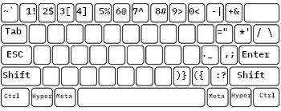
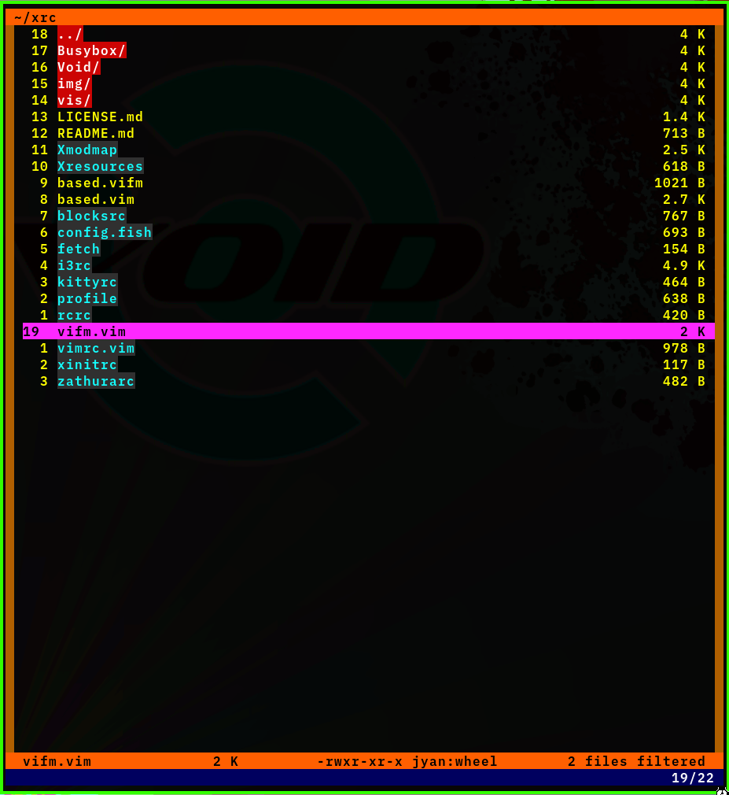
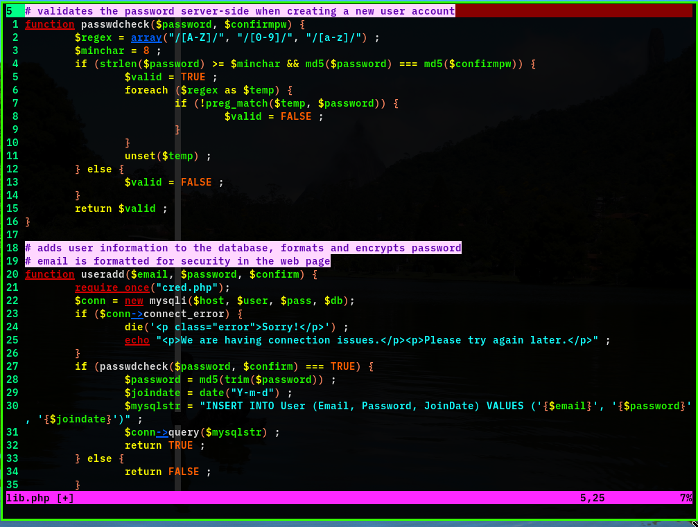

John DeSalvo
jyand@protonmail.com jyand.github.io johndesalvo.orgPapers
also archived at:
There was a very nice blurb on the TCNJ Engineering Department website when it got accpeted.
Ergonomics and Efficiency for Programmers
My new take on the QWERTY keyboard

I created some colorful, high-contrast colorschemes
 
sort of the anti-solarized